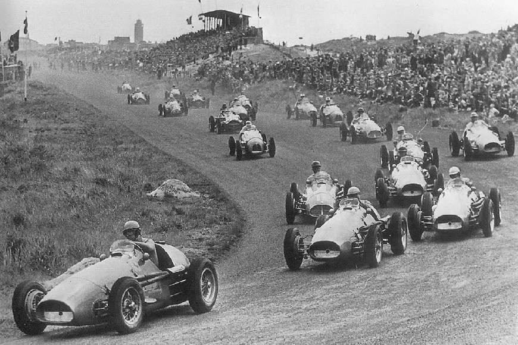
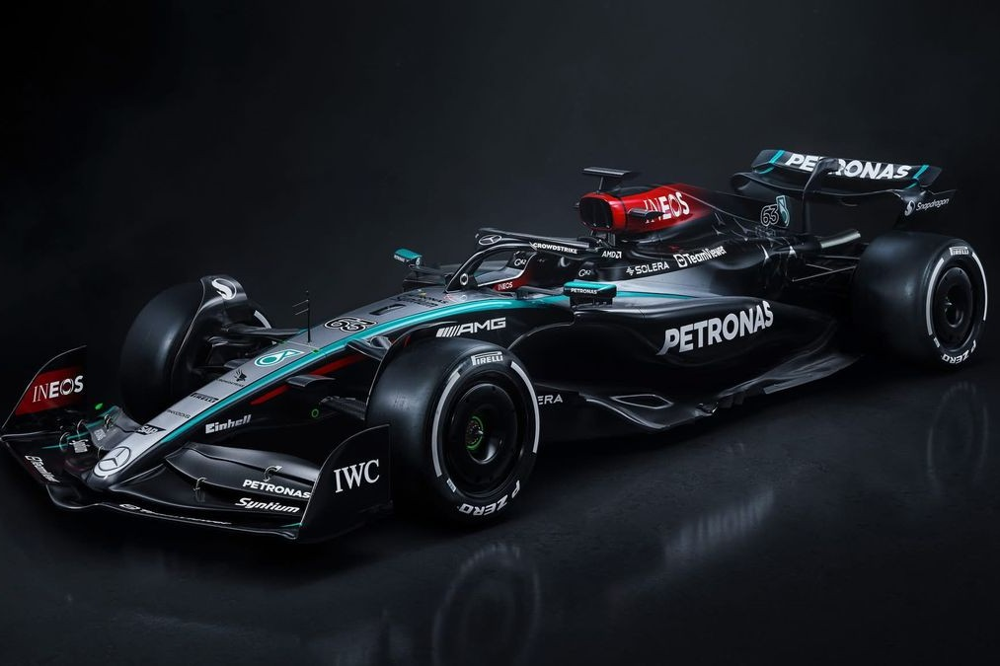

F1 története
A Formula 1 története 1946-tól kezdődően, egészen napjainkig. Egy rövid összefoglaló a sport történelméről. Röviden összefoglalva a lényeg.

Mercedes AMG
Mercedes AMG a Formula 1-ben részt vevő csapat. Jelenleg a legjobb eredményeket éri el. Egy rövid összefoglaló a csapat történelméről és jelenlegi állapotáról.

F1 Drivers
A leghíresebb F1 pilóták a sport történelmében. Összefoglaltuk a legfontosabb információkat róluk, eddigi pályafutásukat és a Forma 1-be tartó hosszú utat.